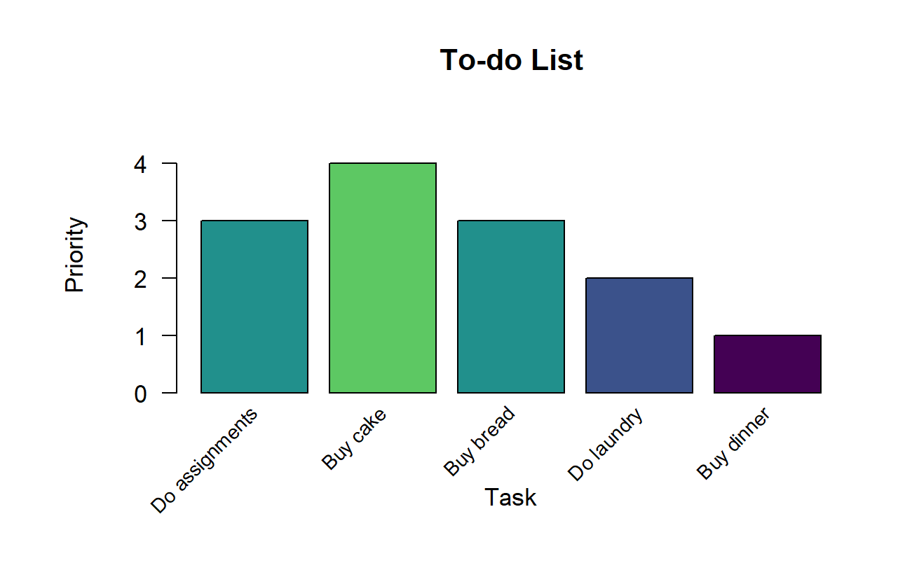
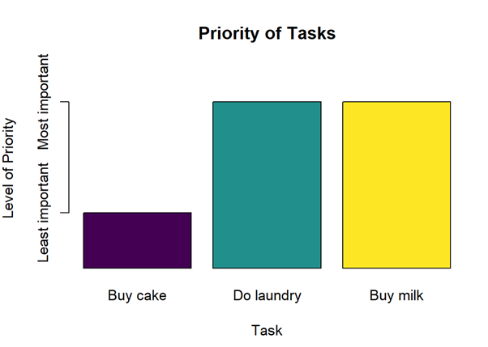
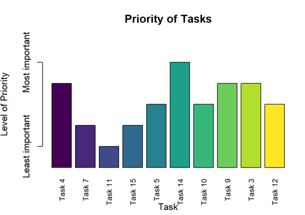

taskPlanner: Effortlessly Manage Your To-Do List
taskPlanner.RmdIntroduction
The taskPlanner package offers a comprehensive solution
for effective task management, designed to streamline your daily
workflow and enhance productivity. With a robust system for organizing
to-do lists, taskPlanner provides tools for adding,
removing, and updating items effortlessly. Whether you’re a busy
professional, a student juggling multiple assignments, or anyone seeking
better organization in your daily life, taskPlanner equips
you with the functionality needed to stay on top of your tasks with
ease.
Explore the key features and functionalities of
taskPlanner as we demonstrate how you can leverage its
tools to optimize your task management process. From filtering tasks by
date and priority to real-time task tracking, taskPlanner
is your go-to solution for efficient task planning and execution.
Installation & Getting Started
You can install the taskPlanner package from GitHub
using the devtools package:
devtools::install_github("Advanced-R-Programming/assignment-3-package-completion-agoh0008")
library(taskPlanner)Import Current To-Do List
To load the most recent to-do list, you can run the following command:
list <- import_todo_list()This first checks for the existence of the to-do list file within the
inst directory of the taskPlanner package. If
the file todo_list.csv exists, it is read into R as a data
frame.
If the to-do list file does not exist, an empty data frame is created with appropriate column headers (“task”, “priority”, “due”). This ensures that you always have a valid data structure to work with, even if you haven’t yet created a to-do list or if the file has been accidentally deleted.
Functions
The following functions provide users the capability to efficiently handle tasks, including adding, updating, and removing them, along with the ability to create S3 objects and perform real-time task tracking. Furthermore, features such as task filtering by date or priority, as well as sorting options, provide users with the flexibility needed to tailor their task management approach to their specific needs and preferences.
Adding New Tasks
To add new tasks to your to-do list, call the add_task
function with the appropriate arguments: todo_list,
task, priority, and due.
Make sure to provide valid inputs:
-
todo_list: A data frame or list representing the current to-do list. -
task: A character string specifying the task to be added. -
priority: An integer specifying the priority of the task (1-5). -
due: A Date object specifying the due date of the task in “YYYY-MM-DD” format.
list <- add_task(list, "Buy bread", 3, "2024-03-15")
list <- add_task(list, "Do laundry", 2, "2024-03-16")
list <- add_task(list, "Buy dinner", 1, "2025-01-09")If the task is successfully added, the updated to-do list will be returned. If a similar task already exists in the list, a warning will be displayed, and the original list will be returned without any changes
# Updated to-do list after adding tasks
print(list)
#> task priority due
#> 1 Do assignments 3 2024-03-15
#> 2 Buy cake 4 2024-03-16
#> 3 Buy bread 3 2024-03-15
#> 4 Do laundry 2 2024-03-16
#> 5 Buy dinner 1 2025-01-09Updating Tasks
To update existing tasks in your to-do list, you can use the
update_task function. Below is an example of how to update
a task at index 3 with new values:
list <- update_task(3, list, "Buy milk", 2, "2024-03-18")In this example:
-
3is the index of the task to be updated. -
listis the current to-do list data frame or list. -
"Buy milk"is the updated task description. -
2is the updated priority of the task. -
"2024-03-18"is the updated due date of the task.
Ensure that you provide valid inputs for the task index, new task
description, priority, and due date. After executing the
update_task function, the specified task in the to-do list
will be updated with the new values.
#> task priority due
#> 1 Do assignments 3 2024-03-15
#> 2 Buy cake 4 2024-03-16
#> 3 Buy milk 2 2024-03-18
#> 4 Do laundry 2 2024-03-16
#> 5 Buy dinner 1 2025-01-09Removing Tasks
To remove tasks from your to-do list, you can utilize the
remove_task function. Below is an example of how to remove
a task at index 1 from the list:
list <- remove_task(1, list)The parameters used are:
-
1is the index of the task to be removed. -
listis the current to-do list data frame or list.
Ensure to provide a valid index for the task you want to remove.
After executing the remove_task function, the specified
task will be removed from the to-do list, and the list will be updated
accordingly.
print(list)
#> task priority due
#> 1 Buy cake 4 2024-03-16
#> 2 Buy milk 2 2024-03-18
#> 3 Do laundry 2 2024-03-16
#> 4 Buy dinner 1 2025-01-09Saving To-Do List
To save your current to-do list, you can use the
export_todo_list function as follows:
export_todo_list(list)This exports the updated to-do list back to a CSV file named
“todo_list.csv” located in the inst directory of your
package. Ensure that you have provided the todo_list
argument, which should be the to-do list data frame or list you want to
export.
The next time you import the to-do list, it will be the version you saved in the current state.
S3 Object & Generic Functions
Creating an S3 Object
The create_todo_list function is designed to facilitate
the creation of an S3 object representing a to-do list. It accepts a
data frame containing tasks, priorities, and due dates as input. If no
to-do list is provided, the function automatically imports the current
to-do list file.
The resulting object is then assigned the class “TodoList,” making it a structured and organized representation of the tasks at hand. This function simplifies the process of managing and manipulating to-do lists within R, providing users with a streamlined approach to organizing their tasks efficiently.
- Creating a TodoList object from an existing to-do list data frame:
my_todo_list <- create_todo_list(list)- Creating a TodoList object from the current to-do list file (imported from package data):
my_todo_list <- create_todo_list()Printing TodoList Object
The print.TodoList function is designed to print the
tasks contained in a ‘TodoList’ object along with their priorities and
due dates. It formats the output in a tabular format with columns for
the task description, priority, and due date.
This function is particularly useful for displaying the contents of ‘TodoList’ objects in a readable format.
Output:
print(my_todo_list)Task Priority Due Date
------------------------------------------------------------
Do assignments 3 2024-03-15
Buy cake 4 2024-03-16
Buy bread 3 2024-03-15
Do laundry 2 2024-03-16
Buy dinner 1 2025-01-09Plotting TodoList Object
The plot.TodoList function allows you to visualize the
tasks in a ‘TodoList’ object by creating a bar plot. Each task is
represented by a bar, with the height of the bar indicating its priority
level. The function uses a color palette to distinguish between
different priority levels, making it easier to identify high-priority
tasks.
Output:
plot(my_todo_list)
Filter & Show Items by Date
The show_items_by_date function is a versatile tool for
filtering and displaying items from a to-do list or other applicable
classes based on a specified date criteria. It accepts an object of
class ‘TodoList’ or other object types, along with a date parameter in
the format “YYYY-MM-DD” to filter the items.
You can leverage this function to easily identify tasks due on a particular date. To demonstrate its usage, input your to-do list object, specify the desired date, and you will promptly receive a list of tasks due on that specific date.
show_items_by_date(my_todo_list, date = "2024-03-16")Output (Object of ‘TodoList’ class):
#> Filtered items:
#> Task Priority Due_Date
#> 1 Buy cake 4 2024-03-16
#> 2 Do laundry 2 2024-03-16Or, if you have tasks stored in other classes, you can still use this function by providing the appropriate object and date filter:
set.seed(123)
other_object <- list(
task = paste("Task", 1:15),
priority = sample(1:5, 15, replace = TRUE),
due = sample(seq(as.Date("2022-01-01"), as.Date("2025-12-31"), by = "day"), 15)
)
show_items_by_date(other_object, date = "2024-10-13")Output (Object of ‘list’ class):
#> Filtered items:
#> Task Priority Due_Date
#> 1 Task 1 3 2024-10-13Filter & Show Items by Priority
The show_items_by_priority function provides a
convenient way to filter and display items from a to-do list or other
applicable classes based on a specified priority filter criteria. Simply
input the object containing your tasks and specify the priority level
you want to filter by, ranging from 1 to 5.
For example, to display tasks with priority level 2 from a TodoList object:
show_items_by_priority(my_todo_list, priority = 2)Output (Object of ‘TodoList’ class):
#> Filtered items:
#> Task Priority Due_Date
#> 1 Buy milk 2 2024-03-18
#> 2 Do laundry 2 2024-03-16Or, if you have tasks stored in other classes, you can still use this function by providing the appropriate object and priority level:
set.seed(123)
other_object <- list(
task = paste("Task", 1:15),
priority = sample(1:5, 15, replace = TRUE),
due = sample(seq(as.Date("2022-01-01"), as.Date("2025-12-31"), by = "day"), 15)
)
show_items_by_priority(other_object, priority = 2)Output (Object of ‘list’ class):
#> Filtered items:
#> Task Priority Due_Date
#> 1 Task 3 2 2024-04-19
#> 2 Task 4 2 2022-01-26
#> 3 Task 9 2 2023-08-16This function streamlines the process of organizing tasks based on priority, helping you focus on what task matters most.
Show Items due Today or Earlier
For real-time task tracking, the show_today function
provides an instant overview of tasks that are due today or earlier in
your to-do list. This allows users to efficiently manage their daily
tasks by focusing on immediate priorities. Additionally, the function
generates a bar chart illustrating the priority of tasks, with higher
priority tasks indicated by taller bars.
To utilize this feature, simply call the function and pass your to-do list object as the argument.
show_today(my_todo_list)Output (Object of ‘TodoList’ class):
#> Items due today or earlier:
#> Task Priority Due_Date
#> Buy cake 4 2024-03-16
#> Do laundry 2 2024-03-16
#> Buy milk 2 2024-03-18
If you have tasks stored in other classes, you can still use this function by passing your object as the argument:
set.seed(123)
other_object <- list(
task = paste("Task", 1:15),
priority = sample(1:5, 15, replace = TRUE),
due = sample(seq(as.Date("2022-01-01"), as.Date("2025-12-31"), by = "day"), 15)
)
show_today(other_object)Output (Object of ‘list’ class):
#> Items due today or earlier:
#> Task Priority Due_Date
#> Task 4 2 2022-01-26
#> Task 7 4 2022-07-30
#> Task 11 5 2023-01-08
#> Task 15 4 2023-05-05
#> Task 5 3 2023-06-03
#> Task 14 1 2023-06-28
#> Task 10 3 2023-07-09
#> Task 9 2 2023-08-16
#> Task 3 2 2024-04-19
#> Task 12 3 2024-04-23
Sort Items by Date or Priority
The sort_items function enables users to sort tasks
based on either their due dates or priority levels. It accepts an object
of class ‘TodoList’ or other applicable classes, along with parameters
specifying whether to sort by date or priority level (with
date = TRUE indicating sorting by date and
date = FALSE indicating sorting by priority) as well as the
sorting order (with ascending = TRUE indicating ascending
order and ascending = FALSE indicating descending
order).
Sorting by Date
To sort items by their due dates, you can use the following syntax:
sort_items(my_todo_list, date = TRUE, ascending = TRUE)This will display the to-do list sorted by date in ascending order.
Output for Sorting by Dates (Object of ‘TodoList’ class):
#> Sorted To-Do List by date in ascending order:
#> Task Priority Due_Date
#> Do laundry 2 2024-03-16
#> Buy cake 4 2024-03-16
#> Buy milk 2 2024-03-18
#> Buy dinner 1 2025-01-09Sorting by Priority
To sort items by their priority levels, you can use the following syntax:
set.seed(123)
other_object <- list(
task = paste("Task", 1:15),
priority = sample(1:5, 15, replace = TRUE),
due = sample(seq(as.Date("2022-01-01"), as.Date("2025-12-31"), by = "day"), 15)
)
sort_items(other_object, date = FALSE, ascending = FALSE)This will display the to-do list sorted by priority in descending order.
Output for Sorting by Priority (Object of ‘list’ class):
#> Sorted To-Do List by priority in descending order:
#> Task Priority Due_Date
#> Task 6 5 2025-12-20
#> Task 11 5 2023-01-08
#> Task 7 4 2022-07-30
#> Task 15 4 2023-05-05
#> Task 1 3 2024-10-13
#> Task 2 3 2025-10-10
#> Task 5 3 2023-06-03
#> Task 10 3 2023-07-09
#> Task 12 3 2024-04-23
#> Task 13 3 2025-03-12
#> Task 3 2 2024-04-19
#> Task 4 2 2022-01-26
#> Task 9 2 2023-08-16
#> Task 8 1 2024-07-20
#> Task 14 1 2023-06-28